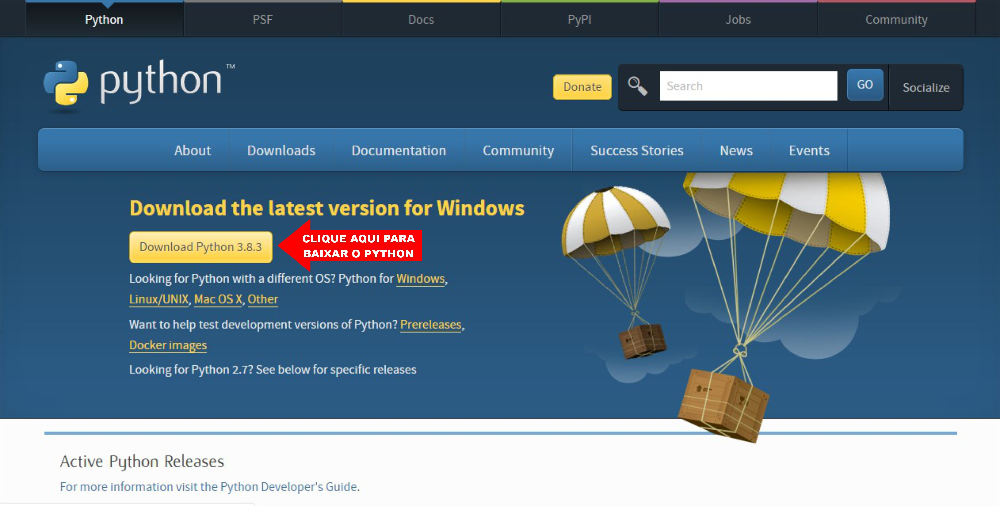
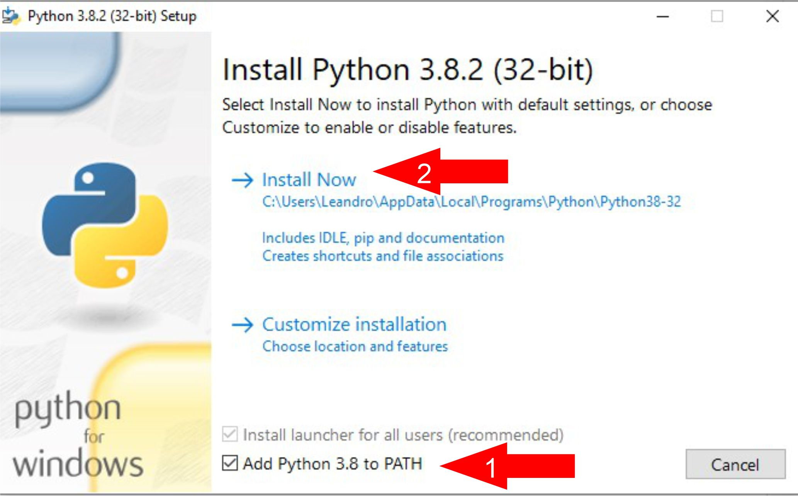
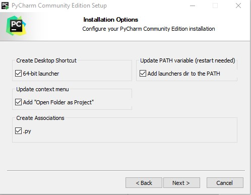
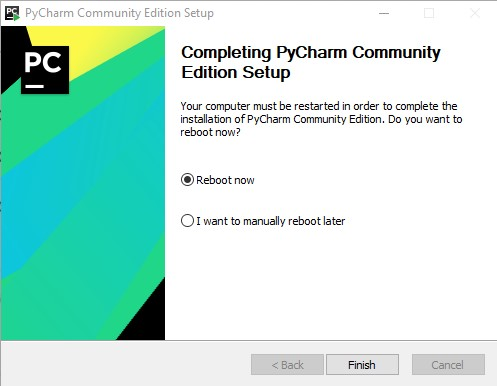
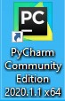
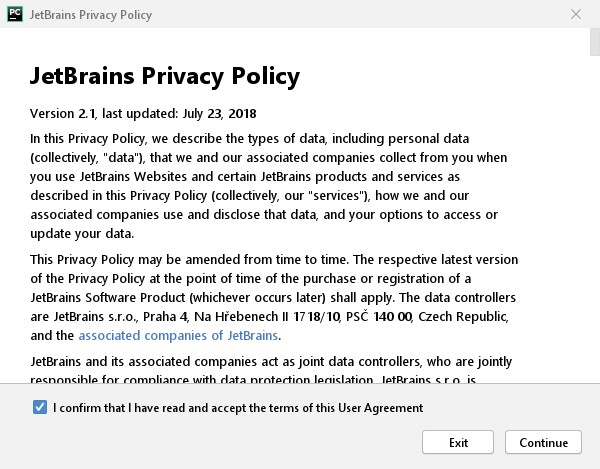
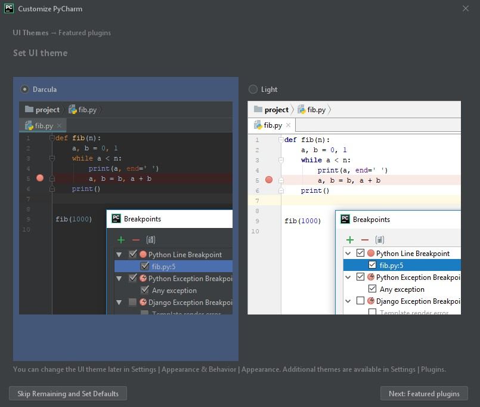
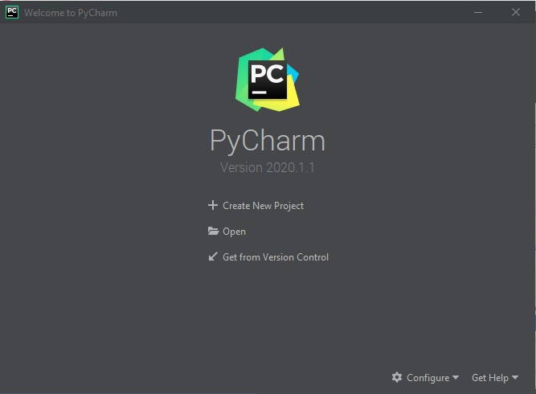
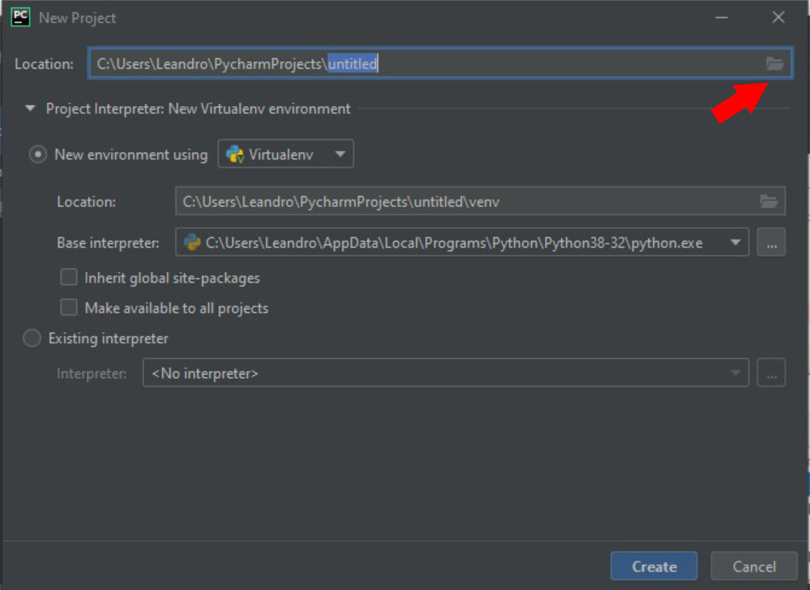
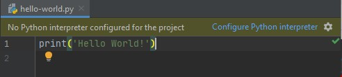

Primeiro você deve baixar o Python do site oficial no seguinte endereço:
Em seguida, clique no botão "Download Python 3.8.3".
O 3.8.3 é exibido no momento deste post, quando você estivar baixando, esse número pode ser diferente.
Dê um duplo clique no arquivo baixado para instalar o Python:
1 - Clique em "Add Python 3.8 to PATH"
2 - Clique em Install Now
No final da instalação clique em "Close"
Para confirmar a instalação do Python, abra o terminal e execute o seguinte comando:
python --version
A resposta para o comando deve ser:
Python 3.8.2
Parabéns! Você já está com o Python instalado!
Se você não sabe o que é terminal, pesquise por CMD, Prompt de Comando ou PowerShell.
No terminal digite python e clique na tecla Enter
Note que agora antes do cursor aparece 3 sinais de maior que ( >>> )
Isso significa que agora você está no terminal do Python.
Agora digite o seguinte comando e tecle Enter:
print('Hello World!')
Esse comando imprimiu na tela o seu primeiro 'Hello World!', agora você está pronto para prosseguir!
Agora instale um Editor de Texto, como o Visual Studio Code ou uma IDE, como o PyCharm.
Nesse tutorial eu optei por instalar o PyCharm mas você pode instalar e usar o Editor da sua preferência.
Baixe o PyCharm no seguinte endereço:
No momento deste post a versão do PyCharm é a 2020.1.1, versão Community, que é gratuita.
Dê um duplo clique no arquivo baixado para instalar o PyCharm:
Clique em Next >, Next >
Nesta tela marque todas as opções e clique em Next >
Clique em Install
Nesta tela marque "Reboot now" e clique em Finish, o computador será reiniciado.
Execute o PyCharm clicando no ícone na Área de Trabalho
Nesta tela marque "I confirm that I have read and accept the terms of this User Agreement" e clique em Continue
Mas é claro que você não leu.
Nesta tela você pode escolher entre o Tema Darcula, o tema escuro que é o padrão ou o Tema Light, o tema claro.
Recomendo o tema escuro para não cansar a vista.
Após escolher o Tema clique em "Next: Featured plugins"
Clique em "Start using PyCharm"
Nessa tela clique em Create New Project
Nessa tela eu recomendo clicar nesse ícone para escolher uma pasta para salvar os seus projetos em Python.
Escolha uma pasta e clique em "Create"
Na tela "Tip of the Day" clique em Close
Clique com o botão direito do mouse no nome da pasta que você escolheu
New / Python File
Digite: hello-world e clique em Enter
Se aparecer a mensagem: "No Python interpreter configured for the project"
Clique em "Configure Python interpreter" e clique em Python 3.8
Aguarde a indexação que a mensagem irá desaparecer.
Agora faça o mesmo Hello World!, digitando o código:
print('Hello World!')
Clique em Run / Run...
Ou utilize as teclas de atalho Alt+Shift+F10
Clique em Python e clique em OK
Vai ser impresso no console o seu primeiro "Hello World!"